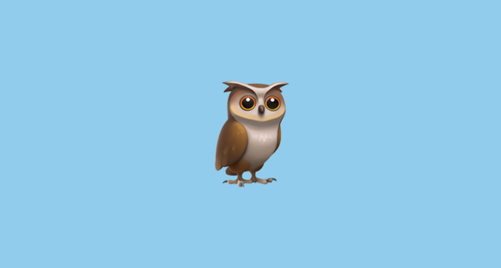

Заголовок 1
Заголовок 2
Заголовок 3
Заголовок 4
Заголовок 5
Заголовок 6
- Элемент списка 1
- Элемент списка 2
- Элемент списка 3
Owls are birds from the order Strigiformes, which includes about 200 species of mostly solitary and nocturnal birds of prey typified by an upright stance, a large, broad head, binocular vision, binaural hearing, sharp talons, and feathers adapted for silent flight. Exceptions include the diurnal northern hawk-owl and the gregarious burrowing owl.
| Ячейка 1 |
Ячейка 2 |
Ячейка 3 |
| Ячейка 4 |
Ячейка 5 |
Ячейка 6 |

Article about owls
This
is
pre
tag
Совообра́зные (лат. Strigiformes) — отряд хищных птиц,
включающий более 200 крупных и средней величины видов,
в основном ночных птиц, распространённых во всех странах мира.
В отряде два современных семейства: совиные, или настоящие совы, и сипуховые.